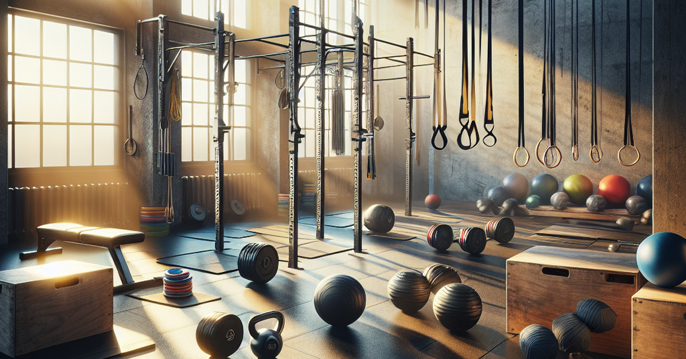

How to Get Started with Functional Fitness
-
Dial In the Basics
- Pick 3–4 days you can realistically train each week.
- Focus on full-body movements (squat, hinge, push, pull).
- Start lighter than you think and protect your joints.
-
Set Up Your Environment
- Choose a gym or home space you’ll actually show up to.
- Keep a simple log (notes app, notebook, or spreadsheet).
- Lay out clothes and gear ahead of time so there’s less friction.
-
Train With Purpose
- Warm up, move well, and don’t rush your reps.
- Progress slowly—more weight, more reps, or better form.
- Track sleep, stress, and recovery, not just PRs.
Simple Functional Fitness Blocks
Strength Block
Choose one squat, one hinge, one push, and one pull. Do 3–4 sets of 6–10 reps each, resting 60–90 seconds between sets. Focus on clean, controlled movement.
Conditioning Block
Pick 2–3 movements like bike, row, or light kettlebell swings. Move for 10–15 minutes at a smooth pace where you can still talk, not sprinting the whole time.
Recovery Block
Finish with 5–10 minutes of light stretching, breathing, or easy walking. The goal is to leave the gym feeling better than when you walked in.
Training Vibes
A simple setup is all you need to train hard and stay consistent.
Favorite Training Video
This is a YouTube video I like for its technique, motivation, and insight into the inner workings of the body.
Workout Generator Web App
I also created a small web app with AI help. It generates a simple workout idea you can do.
Open the Workout Generator AppTableau Visualization
This Tableau Public visualization compares mental and physical health. It connects really well with how I think about training, mindset, and overall wellness.